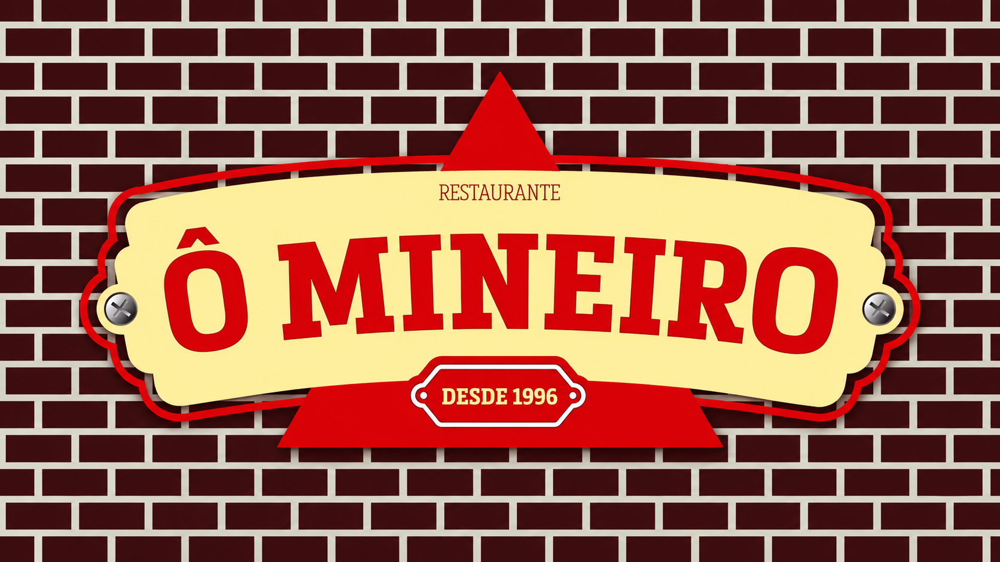

Panela
BuffetFrango com quiabo
Um dos pratos mais reconhecidos da culinária mineira.

Monte o prato a partir das cozinhas da casa: sabores mineiros e nordestinos, além das estações clássicas do buffet.
Estrutura pensada para buffet no peso ou livre, com pratos mineiros e nordestinos organizados por estações.
Bebidas simples de almoço, sucos, cervejas e doses para acompanhar a refeição.
Doces mineiros e sobremesas clássicas para encerrar o almoço.
Self-service de comida mineira e regional em Ilha do Retiro.
Rua Astorga, 96 - Ilha do Retiro, Recife
Domingo à sexta, 11h30 - 15h
(81) 99952-8987
@omineirorestaurante